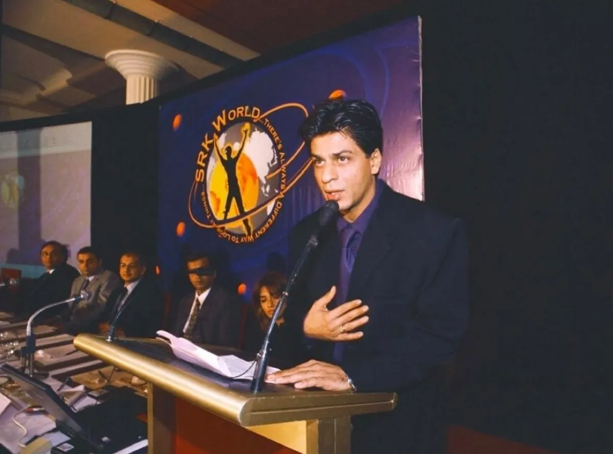
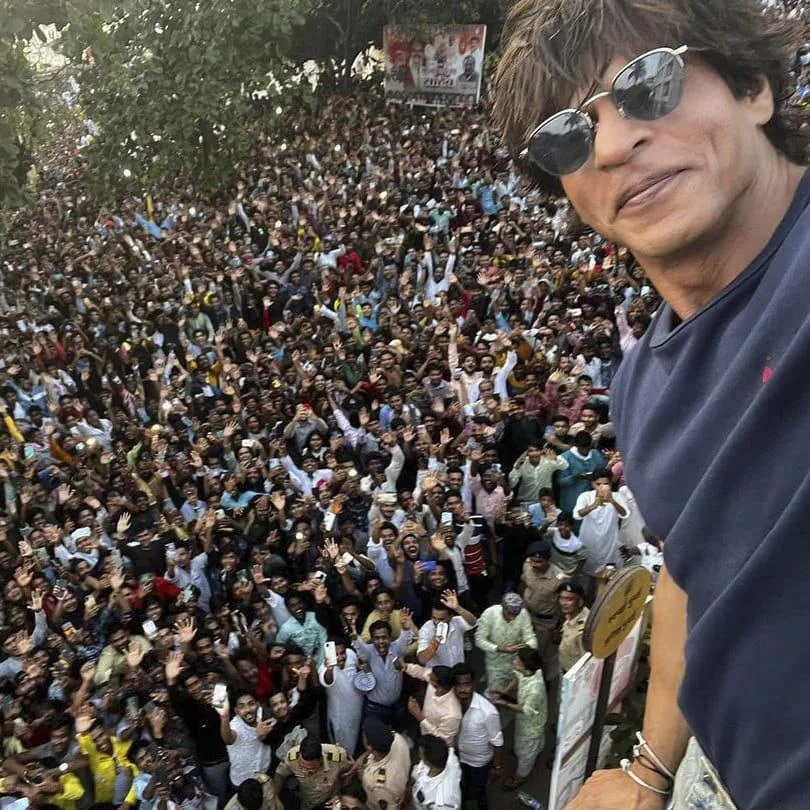
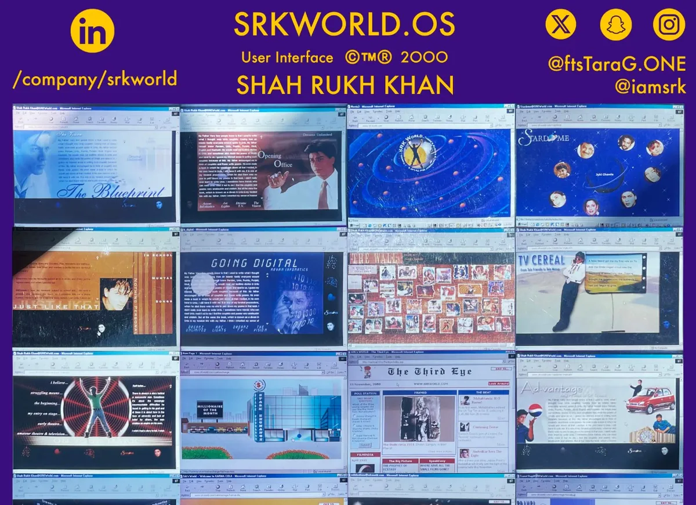
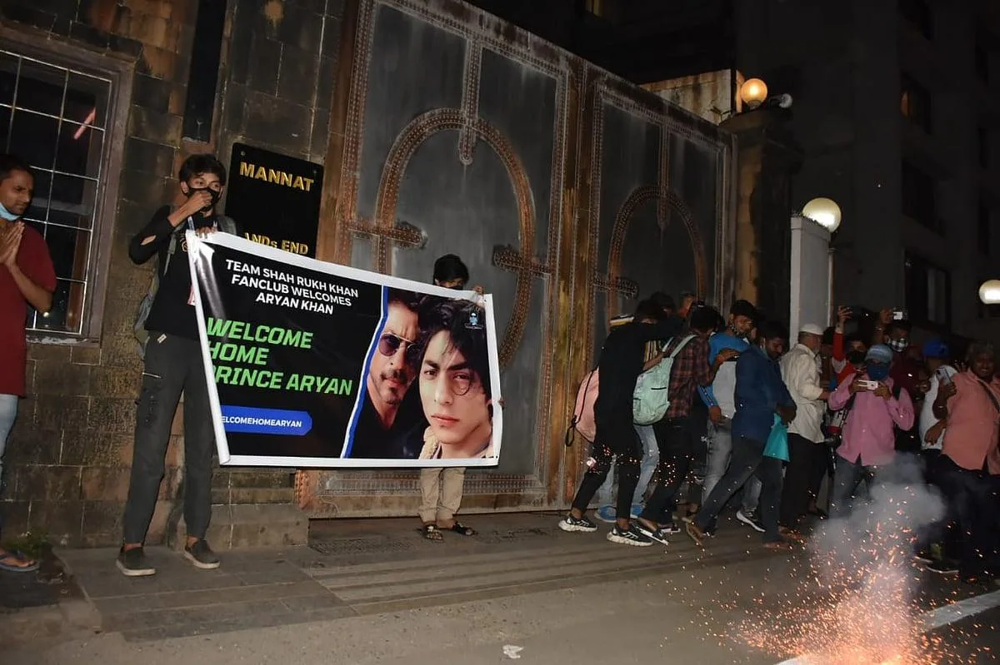

The Master Manuscript · October 2026
Asoka to Boo-Da SRK: The Man, The Myth, The King
This King is not renouncing. He is doubling down with the Royal Flush. Every version of the thesis, integrated into one book: a Prologue, ten Parts, 46 chapters, the Academic Addendum and the Final Frame. Facts are sourced, recollection is labelled, questions are left open on purpose.
Index
Opening
FrontFront matterHow to read this book, the map he drew himself on SRKWorld.com in 2000, and the whole arc in ten movements.PrologueIf Not for Shah Rukh Khan"If not for Shah Rukh Khan…": the sentence that started the thesis, and why 4 October 2021 at Mannat is where it all begins.Part I · The Origin of the King, 1965 to 1999
Ch 1Diaper Days: the boy in the wings, 1946 to 1975His father, a Quit India prisoner from Peshawar, stays in Delhi after Partition. The boy is born into that inheritance in 1965.Ch 2From School To Cool, 1970 to 1985St. Columba's, the Sword of Honour, hockey and the school play. A star pupil shaped by his teachers, and a father lost in 1981.Ch 3Campus Cackle: the rehearsal room, 1985 to 1988Economics at Hansraj on paper, Barry John's Theatre Action Group in practice: the rehearsal room where the actor was trained.Ch 4TV Cereal: six and a half hours, 1988 to 1991Fauji and Circus make him a household face on Doordarshan. His mother dies; he marries Gauri and moves to Bombay.Ch 5The Wall: the villain who became the lover, 1992 to 1999Four films in his first year, the villain of Baazigar and Darr, then DDLJ. The new middle class finds its hero.Part II · The First Digital Empire Starts With…, 2000 to 2013
Ch 6Very Few Know: SRKWorld, 1999 to 2003Dreamz Unlimited, Aryan Infomatics and SRKWorld.com, launched 14 November 2000: a star's own portal before India had broadband.Ch 7Shah Rock Jaan and G.One: the dream that would not dieShah Rock Jaan, the cartoon self drawn for a computer screen, and G.One, the hero who stepped out of the code in 2011.Ch 8The KKR Years: the institution, 2004 to 2009Red Chillies, Red Chillies VFX and the Kolkata Knight Riders: the star starts building institutions around himself.Ch 9My Name Is Khan, 2010: the star becomes the platformHe joins Twitter as @iamsrk and sells My Name Is Khan through it. The star becomes the platform.Ch 10Ra.One, 2011: building a digital kingdomRa.One: games, merchandise, comics, 25+ brands and G.One. Indian cinema's boldest attempt to build a digital kingdom.Ch 11The Empire That Almost WasThe 2000 plan beside the 2011 campaign: what SRKWorld aimed for, what Ra.One delivered, and what never came.Ch 12Chennai Express, 2013: the audience moves the trainChennai Express asks its audience to drive: the tweet-powered train, games, karaoke and daily analytics, from the case study.Ch 13Two Playbooks, One KingSame strategist, same star, two years apart. Ra.One built a universe; Chennai Express built a movement.Part III · The Years of the Apparent Lull, 2014 to 2018
Ch 14Seven Films, Side by Side2014 to 2018 film by film, from Happy New Year to Zero. The money held up; the system around the films did not.Ch 15The Box-Office GraphThe box-office graph from My Name Is Khan to Dunki: no film of 2014 to 2018 reached the Chennai Express level.Ch 16What the Technology Was DoingWhat the technology was asked to do: a product in its own right, then single tie-ins, then platform features.Ch 17Five HypothesesWhy the virtual train never became a railway: five possible explanations, the evidence for each, and what is missing.Ch 18Five ConclusionsFive conclusions on the lull: ambition, benchmark, innovations without the architecture, Zero the exception, and the gap.Part IV · The Ghost in the Present, 2019 to 2022
Ch 19The Silence2019 to 2021, the years without a film: the balcony, the pandemic help, and a silence the public read for itself.Ch 204 October 2021, at MannatOctober 2021 in the public record, in order, with nothing added, beside the author's recollection of 4 October.Ch 21Prison NightsOf the four weeks between raid and homecoming, almost nothing is public. What is documented, and what this book won't invent.Ch 22Asoka to Boo-DaThe central metaphor: Asoka laid down the sword; this King laid down the microphone. The three acts of Be Da Boo-Da.Part V · The Resurrection, 2023
Ch 23Pathaan: the returnThe comeback starts on his birthday with the Pathaan teaser, survives a third boycott, and makes silence the campaign.Ch 24Jawan: the fireJawan: a record opening day, ₹1,148.32 crore worldwide and his first National Film Award for Best Actor.Ch 25Dunki: the counterpointDunki, the quietest of the three: a migrant story told in "Drops" from his 58th birthday. After fire, tears.Ch 26The Numbers of the ResurrectionThree films in eleven months, about ₹2,669 crore: the numbers of the resurrection, with both counts shown.Part VI · The Kingdom by the Geek, 2024 to 2026
Ch 27The Brand UniverseFrom the Hyundai Santro (1998) to Visa (2026): 35+ brands, the Cadbury AI ad, and what his name is worth.Ch 28DubaiThe Burj Khalifa trailer, #BeMyGuest, Royal Estates and the Shahrukhz tower: the city that bought into the face.Ch 29The Knights, from Kolkata to Los AngelesThree IPL titles, five in the Caribbean, teams in the US and UAE, and a cricket ground of their own in Los Angeles.Ch 30The LedgerHurun's estimates, from ₹7,300 crore in 2024 to about ₹12,490 crore in 2025, and Red Chillies' own filed figures.Ch 31The Business of Being SRKWhat he owns or backs, from Red Chillies to Flam: he doesn't only act in the business of attention, he builds it.Ch 32Flam: the ghost of Ra.One meets the AI eraHe invests in Flam, a US$40 million AI interactive-content company. The ghost of Ra.One meets the AI era.Part VII · The Next Frontier
Ch 33The 2000 Playbook, RevisitedIn 2026 the broadband, phones and tools SRKWorld lacked are in every hand. His career read through S.T.E.A.M.Ch 34SRKWorld: a fan-franchising operating systemProposal: SRKWorld reborn as a fan-franchising operating system, where fan communities create and earn together.Ch 35ijOO and the AI BioskopeProposal: ijOO, the author's own universe, and the AI Bioskope, a cinema fans make without borrowing anyone's face.Ch 36Who Owns the Face: InquilaabFans already make KING with AI. Inquilaab and #FreeMyFace: fans fighting for a star's rights over his own face.Part VIII · KING: The Royal Flush
Ch 37KING: the hype before a frameHow KING became his film, the title reveal on his 60th birthday, and the hype before the 24 December 2026 release.Ch 38DOOM to KINGRobert Downey Jr. and Shah Rukh Khan, both born in 1965, open six days apart. The trade wants a clash; this is a relay.Ch 39The Royal FlushThe author's synthesis: five cards (KING, brands, Hurun, Knight Riders, Flam), one King. Not renouncing; doubling down.Ch 40Check Mate FireProposal: Check Mate Fire, the author's 36-piece chess on an 81-square board where the pawn becomes the lighter.Ch 41FAN Becomes the Fire43,400 new posts and 7.5 million views in a day, with no official campaign. The fans are already running it.Ch 42The Third WheelProposal: the Third Wheel, a campaign in which he is the charming friend in a fan couple's story.Ch 43Picture Abhi Baaki HainThere is a film, a business empire and an audience. The evidence gives us the cards; it does not reveal the hand.Part IX · O TO X: My Math
Ch 44The Rules of the GameProposal: O TO X, the reader's game. Start at zero, pick a route, add a tile of your own life, and build your X.Ch 45MY SUM: the Royal Flush ChallengeProposal: MY SUM, the Royal Flush Challenge. Players combine what they made into one universe, credited to all.Ch 46The Game Dashboard: play, create, shareWhat you can play today on agarmainkinghota.com, from posters to Chess81 and King's Lairs, and what comes next.Part X · The Academic Addendum
AMethodWhat this book is made of, and how facts, analysis, recollection and proposals are labelled.BCorrections made in this editionWhat earlier drafts said, what the evidence says, and the source for each correction.CThe chronology, 1946 to 2026Every dated event from 1946 to 2026 in one table, with the chapter where it is told.DThe films, 1992 to 2023Every film from 1992 to 2023, his role, and whether his own company made it.EHonoursEight Filmfare Best Actor awards, the Padma Shri, the Légion d'honneur, the National Award for Jawan and more.FCampaign evidence registerWhat each campaign claim rests on, and how strong the evidence is, from documented to recollection.GOpen items: what is still to be provedEvery [Unverified] claim in one register: what is needed to prove it, and who can supply it.HSources and image creditsThe principal sources behind the book, and where every picture comes from.The Final Frame
The Final FrameThe Silence Before the KingWe built the campaigns, watched the comeback, celebrated the resurrection. What did October 2021 ask of us?Contents


Part I
The Origin of the King, 1965 to 1999
How a boy from Delhi, with no film family and no money, reached the whole country through one television channel and became the romantic hero of a nation that was just learning to buy things. Facts in this Part are from Wikipedia: Shah Rukh Khan unless another source is named.
5 sections · 23 min

Part II
The First Digital Empire Starts With…, 2000 to 2013
Very few know. Before the superhero, before the train, before Twitter, there was a website named after a little boy, and a cartoon of a star drawn for the screen of a computer. This Part follows one ambition through fourteen years: the line he tried to build too early, the institutions he built instead, and the two campaigns in which the line came back, first as a universe and then as a train.
8 sections · 48 min
- Chapter 6Very Few Know: SRKWorld, 1999 to 20037 min
- Chapter 7Shah Rock Jaan and G.One: the dream that would not die4 min
- Chapter 8The KKR Years: the institution, 2004 to 20094 min
- Chapter 9My Name Is Khan, 2010: the star becomes the platform4 min
- Chapter 10Ra.One, 2011: building a digital kingdom8 min
- Chapter 11The Empire That Almost Was5 min
- Chapter 12Chennai Express, 2013: the audience moves the train12 min
- Chapter 13Two Playbooks, One King4 min

Part III
The Years of the Apparent Lull, 2014 to 2018
The train reached its station in August 2013. Then, film by film, the man who had driven it began to step off. The films kept coming and most of them made money. What thinned out was the story around them. This Part puts the seven films side by side, draws the curve, sets out five possible explanations, and states what the evidence can and cannot support.
5 sections · 34 min

Part IV
The Ghost in the Present, 2019 to 2022
Four years without a lead release. Almost no interviews. A star who had built an empire on talking let the silence talk for him. Then, in October 2021, the silence changed sides. This Part keeps two records apart on purpose: what the public record shows, and what the author remembers.
4 sections · 26 min

Part V
The Resurrection, 2023
He came back on his own terms: no media tour, no explaining, only the films, the fans and the balcony. The silence had turned into scarcity, and scarcity into an event.
4 sections · 21 min

Part VI
The Kingdom by the Geek, 2024 to 2026
After 2023 he did not rush into the next film. For almost three years there was no new release. Instead the institution he had built came back into view, piece by piece: the brands, a city in the desert, a cricket ground in America, a billionaire's ledger and, quietly, a stake in artificial intelligence. Very few connected the pieces to the boy who built a website in 2000.
6 sections · 29 min
Part VII
The Next Frontier
Everything in this Part is labelled Proposal or Analysis unless it says otherwise. SRKWorld's return, ijOO, the AI Bioskope and the fan-franchising operating system are the author's concepts. None is an announced plan of Shah Rukh Khan, Red Chillies Entertainment, the makers of KING or any company. Rumour has it something is cooking. This Part is about what could be cooked.
4 sections · 20 min

Part VIII
KING: The Royal Flush
This King is not renouncing. He is doubling down with the Royal Flush. Every road in this book leads to one film, opening on 24 December 2026, and to one question: what is in his hand?
7 sections · 35 min
Part IX
O TO X: My Math
The King's last move is yours. What if, after reading the story of a King who kept reinventing the game, you got to play one yourself? An independent creative concept by the author; not an official game of Shah Rukh Khan, Red Chillies Entertainment or KING.
3 sections · 5 min

Part X
The Academic Addendum
The creative story ends with the game. The research record follows it: how this book was made, the data it rests on, what it corrected, what it still cannot prove, and where every fact came from.
8 sections · 21 min

The source versions
This book integrates every earlier version of the thesis. They stay online exactly as written, for the record.